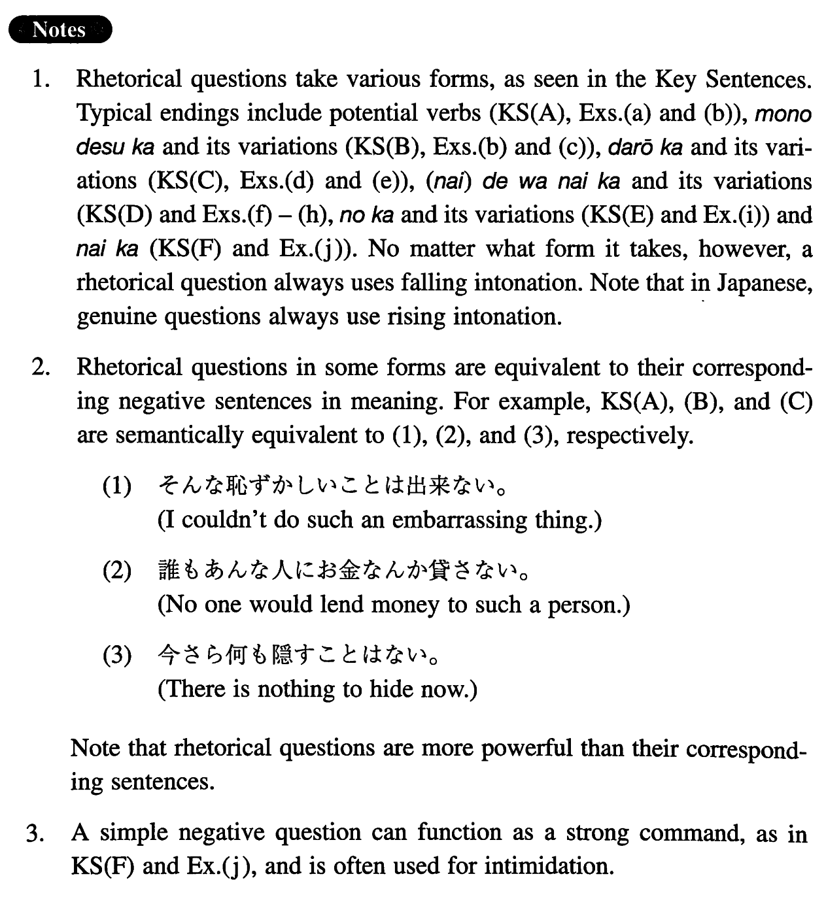

Rhetorical Question (I. 352)
- (ksa).
- そんな恥ずかしいことが出来ますか。
- I could never do such an embarrassing thing! (literally: Could I do such an embarrassing thing?)
- (ksb).
- 誰があんな人にお金なんか貸すもんですか。
- Who would lend money to such a person!
- (ksc).
- 今更何を隠すことがあるだろう（か）。
- What is there to hide now!
- (ksd).
- 彼女がこんな所へ来るわけがないじゃない（か）。
- There is no reason that she would come to a place like this.
- (kse).
- 何だ、テレビを見ているの（か）。
- Oh, you're watching TV!
- (ksf).
- 早くしないか。
- Do it quickly!
- (a).
- こんなものがお客様に出せますか。
- How could we serve such a thing to guests!
- (b).
- あんな男に何が出来る（もの）か。[male, informal]
- What can a man like that do!
- (c).
- 私の気持ちがあなたなんかに分かるもんですか。
- You never understand my feelings!
- (d).
- こんな馬鹿なことってあるでしょうか。
- How can such a ridiculous thing happen!
- (e).
- どうしてそれが彼に分からないことがあろう（か）。
- How could he not understand it!
- (f).
- 彼にそんな難しいことが分かるはずがないじゃない（か）。
- How could you expect him to understand such a difficult thing!
- (g).
- 何も泣くことはないじゃない（か）。
- Oh, there's no reason to cry!
- (h).
- 男は「開け、ゴマ！」と叫んだ。すると、なんと岩の扉が音もなく開いたではないか。
- The man shouted, "Open sesame!" And look what happened: the rock (literally: rock door) opened with no sound!
- (i).
- ああここにいたの（か）。
- Oh, you are here!
- (j).
- さっさと歩かないか。
- Walk quickly!
